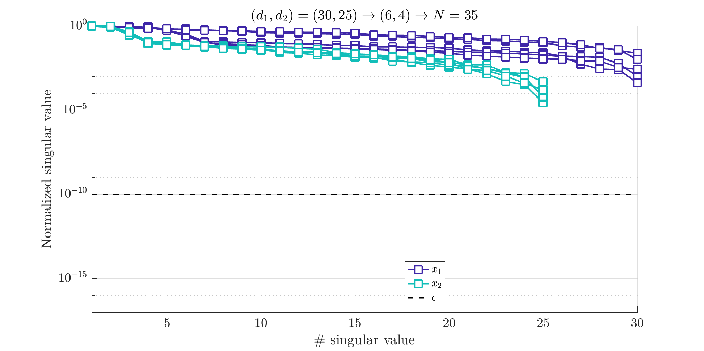
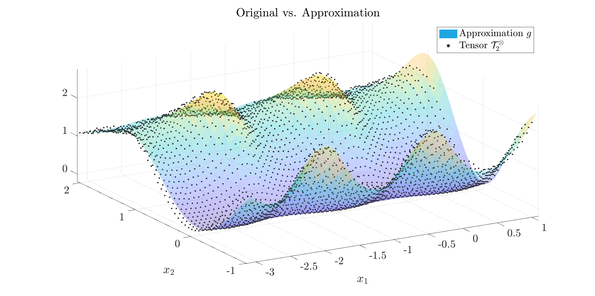

Tensor example
Define a tensor based on an irrational function, disturbed by a random number
Start by defining your modelH
$$
H(x_1,x_2) = \frac{5x_2^2}{2+\sin(4x_1)+x_2^4} (1+r),
$$
where $r\in[-0.075,+0.075]$ is a random number.
%%% Tensor model generation
H = @(x) 5*x(:,2).^2./(2+sin(4*x(:,1))+x(:,2).^4);
n = 2;
ip = {linspace(-pi,1,60) linspace(-1,2,50)};
%%% Column/Row
for i = 1:n
p_c{i} = ip{i}(2:2:end);
p_r{i} = ip{i}(1:2:end);
end
%%% Data tensor/rand
[y,x,dim] = mlf.make_tab_vec(H,p_c,p_r);
y = y.*(1+.075*(rand(length(y),1)-.5));
tab = mlf.vec2mat(y,dim);
tab are constructed. Here leading to a 2-D tensor, and more specifically
$$
\mathcal T_2^{\otimes} \in \mathbb R^{60\times 50}
$$
Use the mLF (Alg. 1: direct [A/G/P-V, 2025])
Now we are ready to build the approximation. Theopt.method is used to select either the recursive ('rec') or full ('full') method.
Here the latter is used and results in better results (still to be understood).
The opt.data_min is used to use all data in the null-scapce computation (requires more CPU but may result in a least square averaging).
opt.method_null = 'svd0'; % null space method
opt.method = 'full'; % full or recursive method
opt.ord_show = true; % show order detection step
opt.ord_obj = [6 4]; % set objective orders
opt.data_min = false; % use all the data
opt.ord_obj allows to adjust this.

Normalized singular values of some of the single variable Loewner matrices.
Evaluate the resulting approximate
Now we compare the original data and approximate functions. The below figure compares the original datatab and approximate g functions along $x_1$ and $x_2$.
The frames show the value (left) and the mismatch (right).
